Seven grades that mean the same thing every week.
Every cutting is sized on the table before it is counted, so a Small in week 3 is a Small in week 40. You can fix your finishing formats and keep them.
Thirty-two lines of Pothos, Sansevieria, Satin Pothos, Philodendron and Dieffenbachia, grown in Honduras and supplied unrooted or rooted in seven consistent grades to growers in North America and Europe. Availability every week, all year.
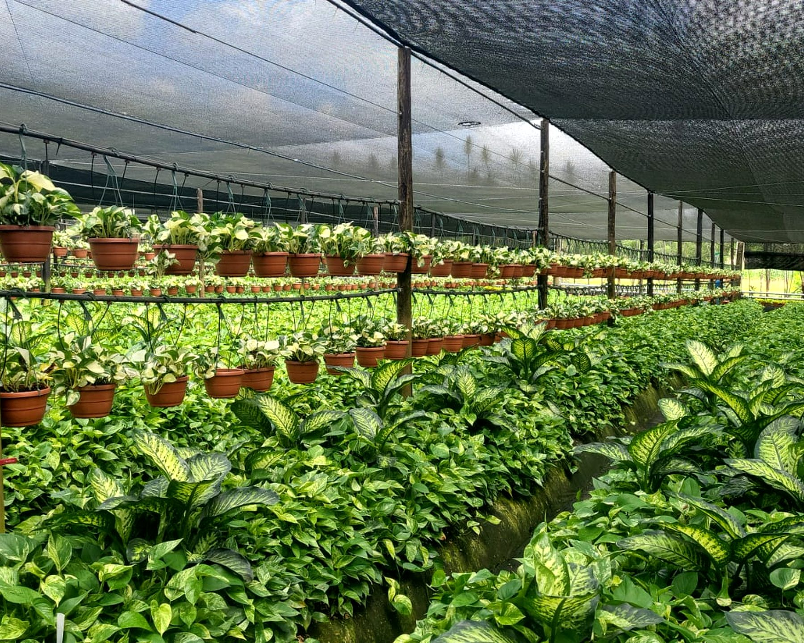
A cutting is only as good as the next thousand like it. Everything at Broton Verde is set up so that what arrives on your bench matches what you ordered: the line, the grade, the count and the condition.
Every cutting is sized on the table before it is counted, so a Small in week 3 is a Small in week 40. You can fix your finishing formats and keep them.
Mother stock is planted and pruned on a calendar, so supply does not run in waves. The availability sheet comes out every week, by line and grade, generated from the nursery system.
Stock plants are renewed on rotation and grown under 70–80% shade net with filtered, scheduled irrigation. Phytosanitary certificate with every consignment.
Take unrooted cuttings and root them on your bench, or rooted material that goes straight into production. Either way the count on the lid is the count inside.
Pothos is the volume programme and Sansevieria the second. Satin Pothos, Heartleaf Philodendron and Dieffenbachia complete the list. Every line is sold unrooted or rooted, in seven grades.
Thirteen lines, from the classic Hawaiian and Jade to Snow Queen, Marble Princess and Icy Mammoth. Jade and Hawaiian root fastest; Marble Queen adds a week or two, Neon adds three and prefers more shade.
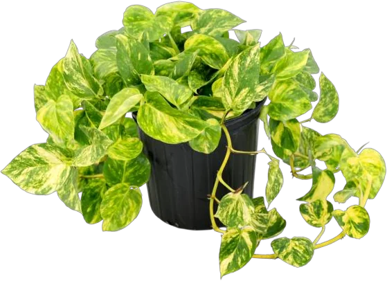
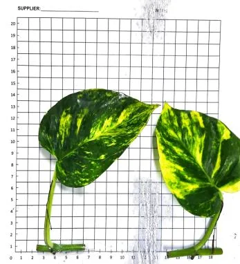
Epipremnum aureum
Variegated foliage
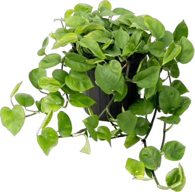
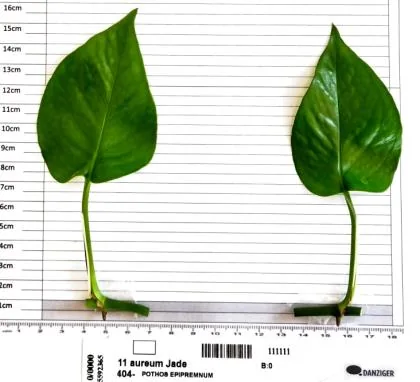
Epipremnum aureum
Bright foliage
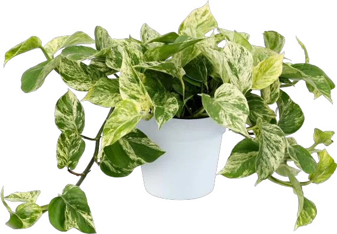
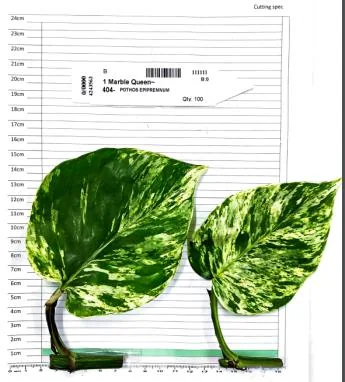
Epipremnum aureum
Variegated foliage
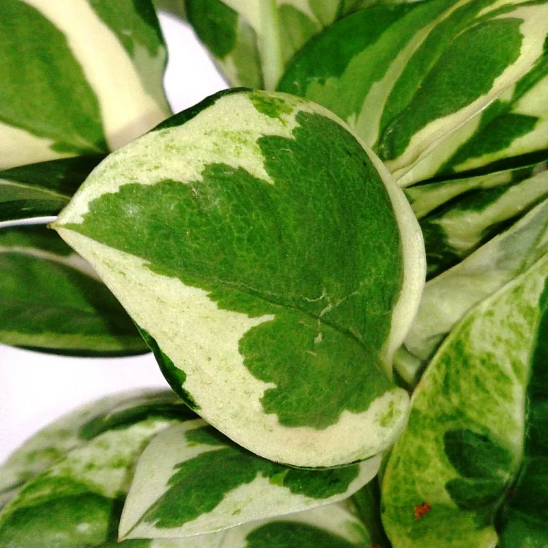
Epipremnum aureum
Cut leaf-and-eye from stock beds on rotation; sized on the table before it is counted.
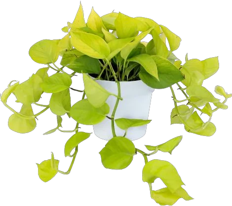
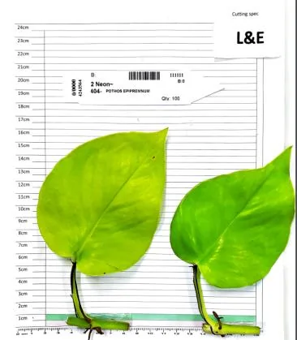
Epipremnum aureum
Golden green-yellow leaves with no variegation
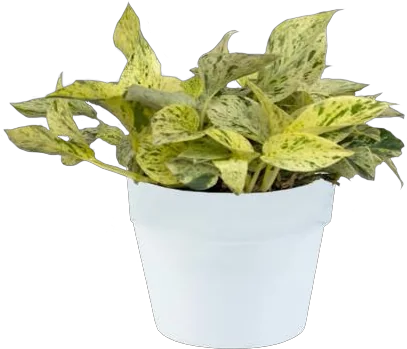
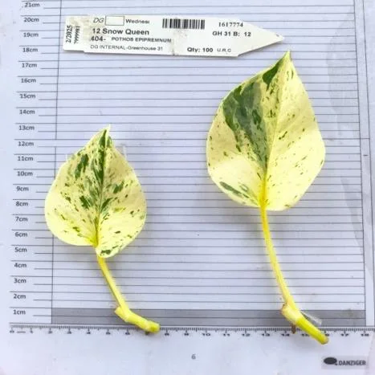
Epipremnum aureum
Similar to the well-known ‘Marble Queen’ but with more white variegation
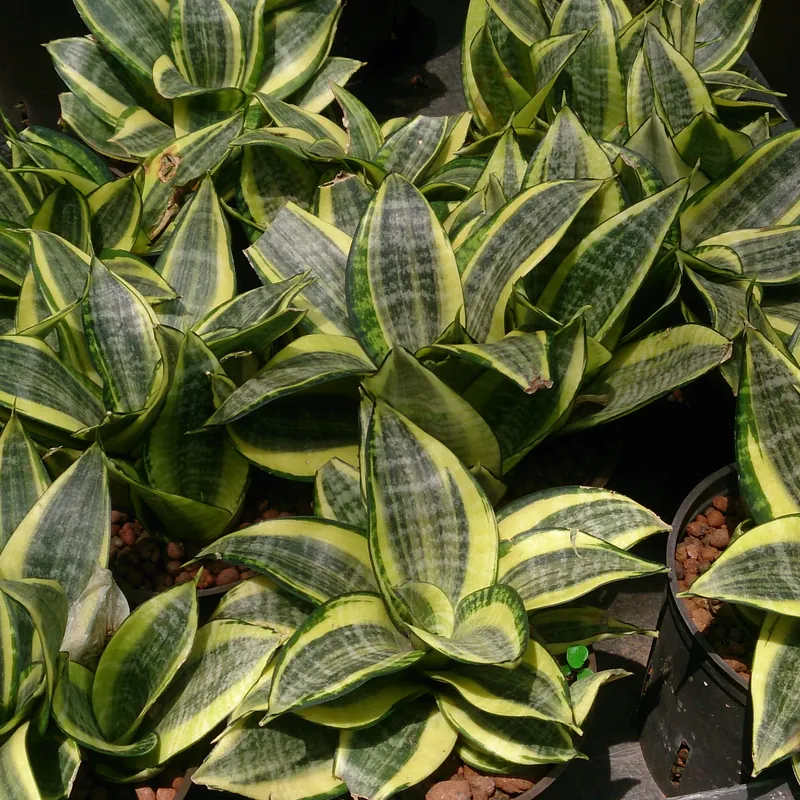
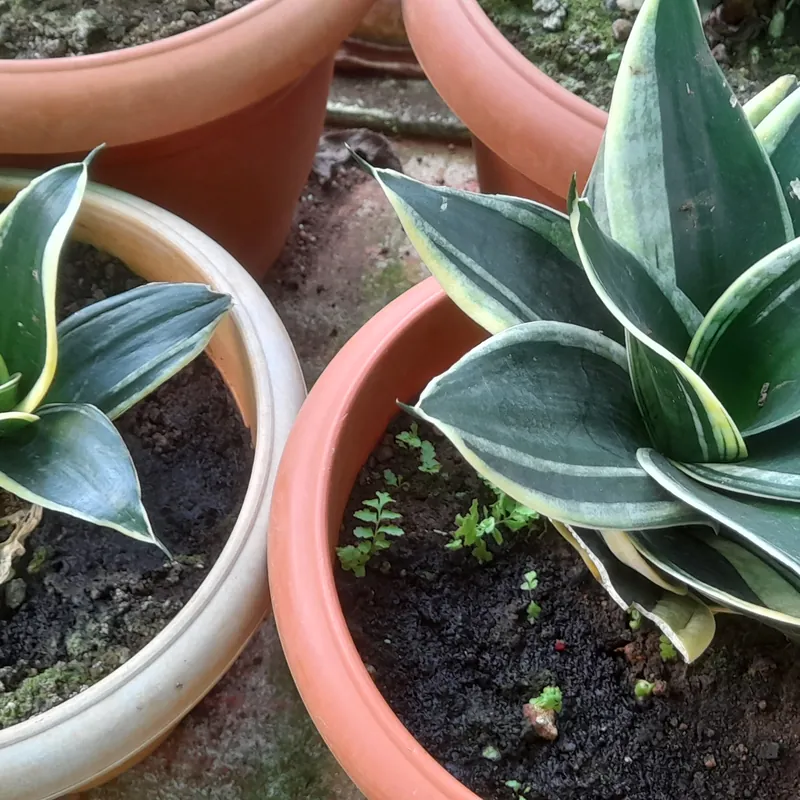
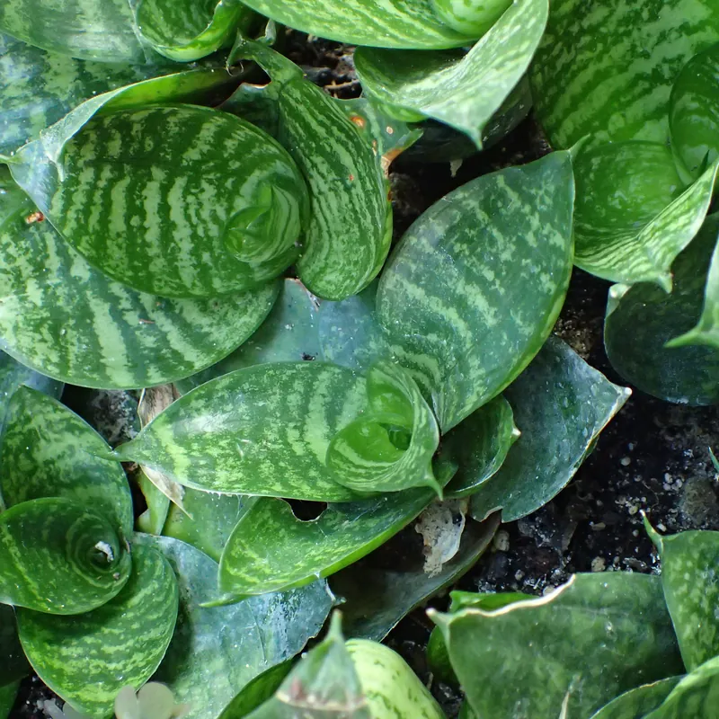
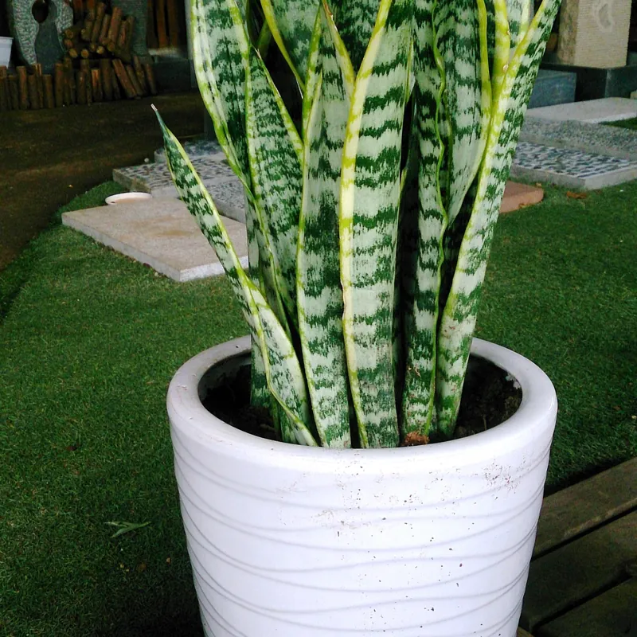
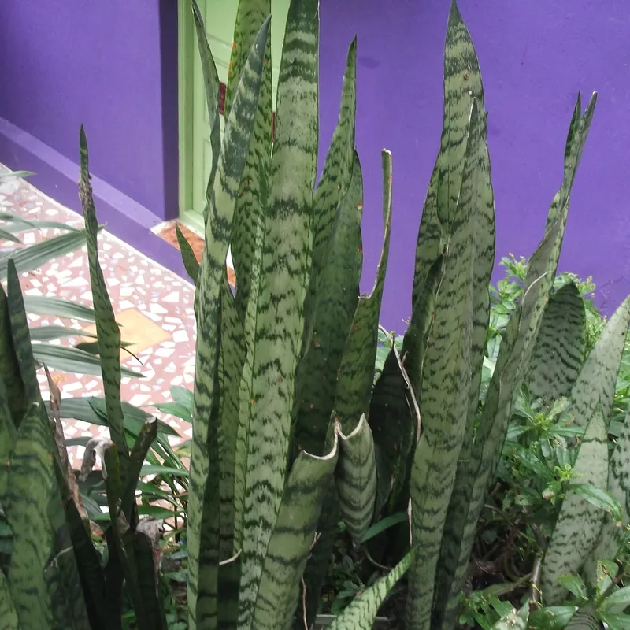
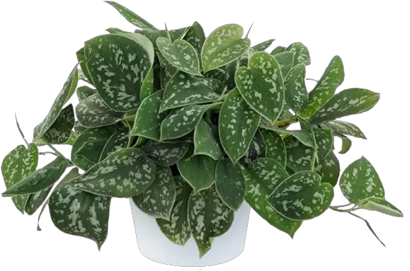
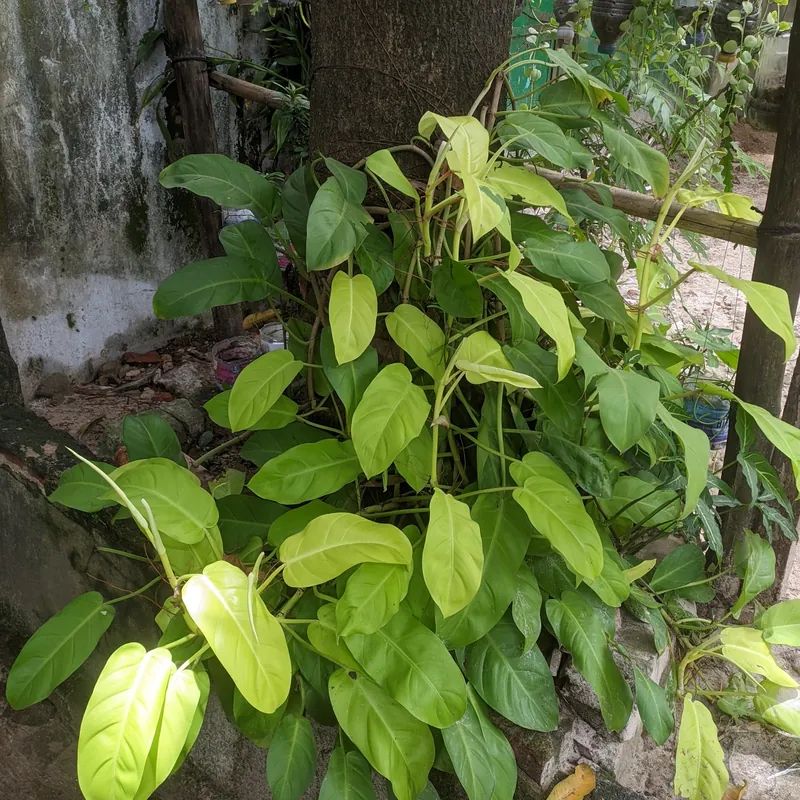
Order by line, grade and quantity. Most programmes mix three or four grades of one line; tell us your finishing format and we will suggest the mix.
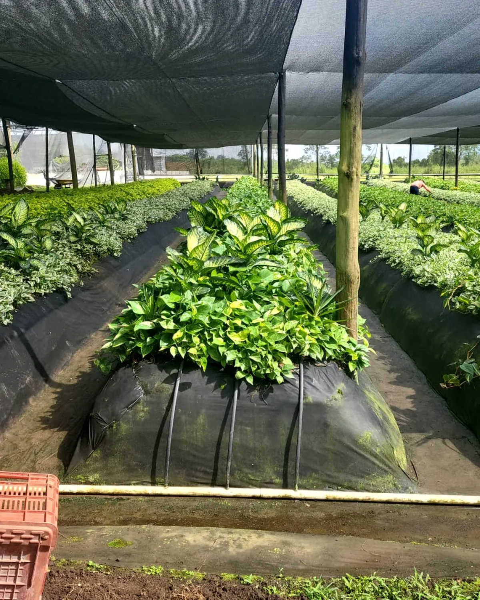
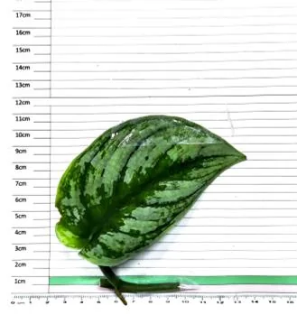
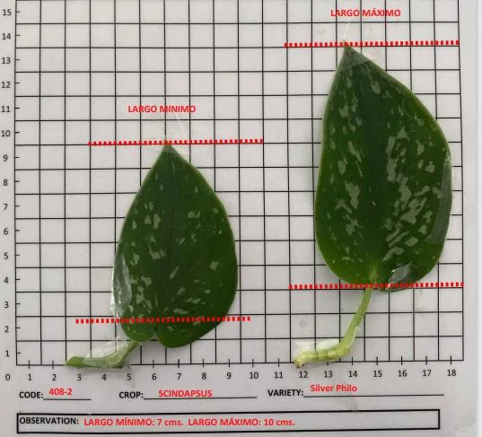
A year-round growing climate in the Honduran highlands, shade net over every stock bed, and our own filtered water on a fixed fertigation programme. The result is uniform foliage that stays turgid from the bed to the box.
Two departures a week, one north and one east. Boxes are closed the day they are packed and travel with their phytosanitary certificate, packing list and invoice. Door-to-door delivery on request.
Generated from the nursery's own system, so what is offered is what is in the beds. Ask to be added to the list and plan your orders from it.
Get on the weekly list| Line | Type | Grade | Units |
|---|---|---|---|
| Pothos Hawaiian | URC | Small | 24,000 |
| Pothos Jade | URC | Medium | 18,200 |
| Pothos Marble Queen | RC | Small | 3,200 |
| Pothos Neon | URC | California | 9,400 |
| Satin Pothos Exotica | URC | Small | 2,500 |
| Sansevieria Laurentii | RC | Large | 1,900 |
Line, grade, unrooted or rooted, quantity and the week you need it. We reply with the current availability and a landed estimate for your gateway.